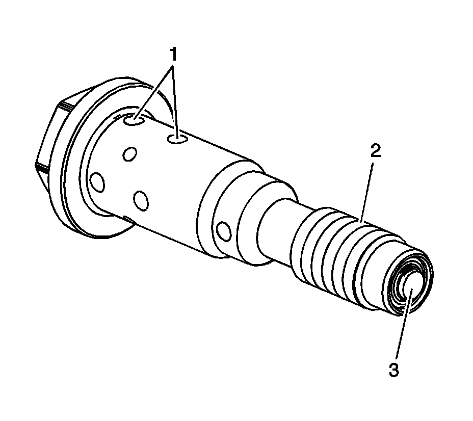
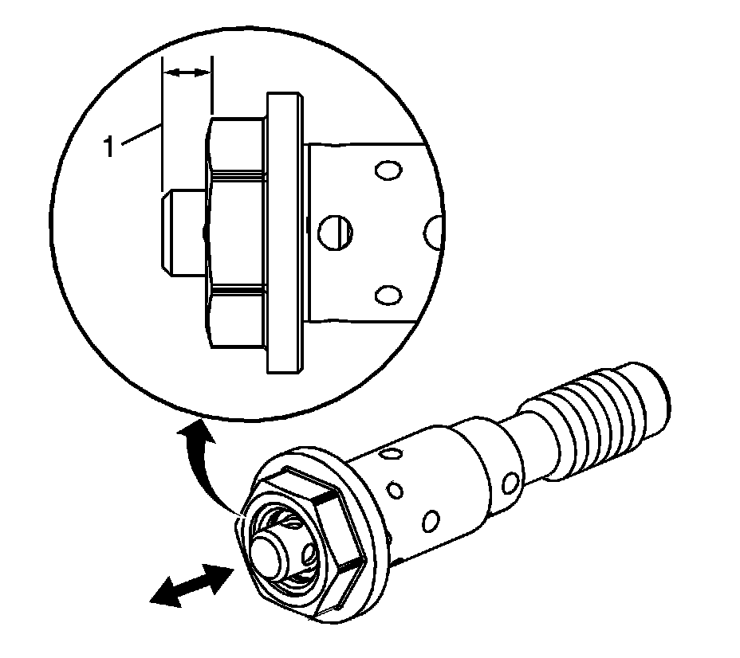

Off-Vehicle
Camshaft Position Actuator Solenoid Valve Inspection (Off-Vehicle)

Important: Do not use the camshaft position (CMP) actuator solenoid valve again. Install a NEW valve during assembly. The inspection procedure below is provided for off-vehicle diagnostic purposes only.
1. Inspect the CMP valve for the following conditions:
^ Dirt, debris, or restrictions within the oil passages (1)
^ Damaged threads (2)
If the threads of the valve are damaged, also inspect the threads in the front of the camshaft for damage.
^ Dirt, debris, or restrictions within the oil inlet check valve (3)
If debris is detected, the engine assembly should be inspected to determine the source of contamination.

2. Inspect for a sticking valve spool or broken valve spool spring.
3. Depress the valve spool into the housing. The valve should move freely with no binding or sticking and minimal resistance inward. When released, the valve spring should return the spool to the proper extended position (1) of 6.08-6.12 mm (0.239-0.241 in).